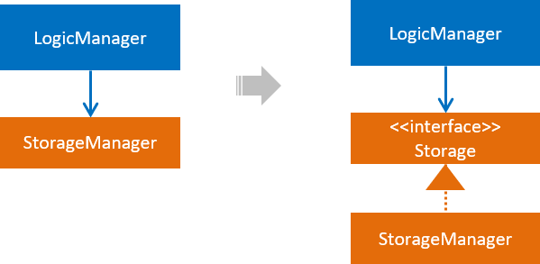
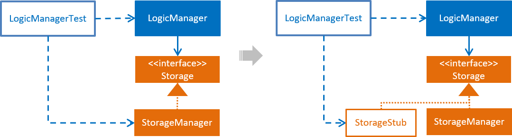
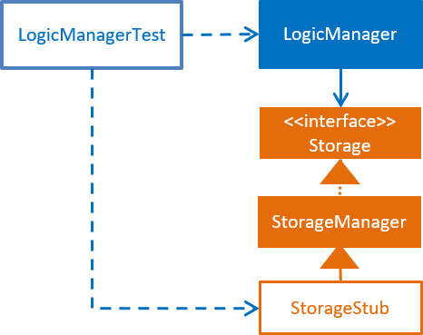

After studying this code and completing the corresponding exercises, you should be able to,
- Utilize User Stories
[LO-UserStories] - Utilize use cases
[LO-UseCases] - Use Non Functional Requirements
[LO-NFR] - Use Polymorphism
[LO-Polymorphism] - Use abstract classes/methods
[LO-Abstract] - Use interfaces
[LO-Interfaces] - Follow Liskov Substitution Principle
[LO-LSP] - Use Java-FX for GUI programming
[LO-JavaFx] - Analyze Coupling and Cohesion of designs
[LO-CouplingCohesion] - Apply Dependency Inversion Principle
[LO-DIP] - Use Dependency Injection
[LO-DI] - Apply Open-Closed Principle
[LO-OCP] - Work in a 3KLoC code base
[LO-3KLoC]
Utilize User Stories [LO-UserStories]
Exercise: Add more user stories
-
Assume you are planing to expand the functionality of the AddressBook (but keep it as a CLI application). What other user stories do you think AddressBook should support? Add those user stories to the
DeveloperGuide.adoc.
Utilize use cases [LO-UseCases]
Exercise: Add a 'Rename tag' use case
-
Add a use case to the
DeveloperGuide.adocto cover the case of renaming of an existing tag. e.g. rename the tagfriendstobuddies(i.e. all persons who had thefriendstag will now have abuddiestag instead) Assume that AddressBook confirms the change with the user before carrying out the operation.
Use Non Functional Requirements [LO-NFR]
Exercise: Add more NFRs
-
Add some more NFRs to the
DeveloperGuide.adoc
Use Polymorphism [LO-Polymorphism]
Note how the Command::execute() method shows polymorphic behavior.
Exercise: Add a polymorphic isMutating method
-
Add a method
boolean isMutating()to theCommandclass. This method will returntruefor command types that mutate the data. e.g.AddCommand -
Currently, AddressBook data are saved to the file after every command. Take advantage of the the new method you added to limit file saving to only for command types that mutate data. i.e.
addcommand should always save the data whilelistcommand should never save data to the file.
|
There may be better ways to limit file saving to commands that mutate data. The above approach, while not optimal, will give you chance to implement a polymorphic behavior. |
Use abstract classes/methods [LO-Abstract]
Exercise: Make Command#execute() method abstract
-
Make the
Command#execute()method abstract (hint: refer to the comment given below the method)
Use interfaces [LO-Interfaces]
Note how the AddressBook class implements the ReadOnlyAddressBook interface so that clients who don’t need write access to the AddressBook can access the AddressBook through the ReadOnlyAddressBook interface instead.

Exercise: Add a Printable interface
-
Add a
Printableinterface as follows.
-
OverridethegetPrintableStringin classesName,Phone,Email, andAddressso that each produces a printable string representation of the object. e.g.Name: John Smith,Phone: 12349862 -
Add the following method in a suitable place of some other class. Note how the method depends on the Interface.
/** * Returns a concatenated version of the printable strings of each object. */ String getPrintableString(Printable... printables) {The above method can be used to get a printable string representing a bunch of person details. For example, you should be able to call that method like this:
// p is a Person object return getPrintableString(p.getPhone(), p.getEmail(), p.getAddress());
Follow Liskov Substitution Principle [LO-LSP]
Exercise: Add an exception to an overridden method
-
Add a
throws Exceptionclause to theAddCommand::executemethod. Notice how Java compiler will not allow it, unless you add the samethrowsclause to the parent class method. This is because if a child class throws an exception that is not specified by the Parent’s contract, the child class is no longer substitutable in place of the parent class. -
Also note that while in the above example the compiler enforces LSP, there are other situations where it is up to the programmer to enforce it. For example, if the method in the parent class works for
nullinput, the overridden method in the child class should not rejectnullinputs. This will not be enforced by the compiler.
Use Java-FX for GUI programming [LO-JavaFx]
Exercise: Enhance GUI
-
Do some enhancements to the AddressBook GUI. e.g. add an application icon, change font size/style
Analyze Coupling and Cohesion of designs [LO-CouplingCohesion]
-
Notice how having a separate
ParserUtilclass to handle user input validation, space trimming etc. of model data (an application of the Single Responsibility Principle) improves the cohesion of the model component (since it does not need to be concerned with handling user input) as well as theParserUtilclass.
Exercise: Identify places to reduce coupling and increase cohesion
-
Where else in the design coupling can be reduced further, or cohesion can be increased further?
Apply Dependency Inversion Principle [LO-DIP]
-
Note how the
LogicManagerclass doesn’t depend onStorageManagerdirectly, but rather the interfaceStorage. This is an application of the Dependency Inversion Principle. -
Where else in the code do you notice the application of DIP?
Use Dependency Injection [LO-DI]
Notice how the LogicManager class does not depend on the StorageManager class, but depends on the Storage interface.
This allows us to use Dependency Injection to test the LogicManager class without getting the StorageManager class involved.
Exercise: Facilitate injecting a StorageStub
-
Notice how
LogicManagerTesttestsLogicManagerby constructing aStorageManagerobject. -
Implement
StorageStubsuch that calls to itssave*methods do nothing (i.e. empty method body). -
Update
LogicManagerTestto work with theStorageStubinstead of the actualStorageManagerobject. i.e.LogicManagerTestinjects aStorageStubobject when constructing aLogicManagerbefore testing it. -
The example above uses DIP as a means to achieve DI. Note that there is another way to inject a
StorageStubobject, as shown below. In this case we do not apply the DIP but we still achieve DI.
Apply Open-Closed Principle [LO-OCP]
Exercise: Analyze OCP-compliance of the LogicManager class
-
Consider adding a new command to the Address Book. e.g. an
editcommand. Notice how little you need to change in theLogicManagerclass to extend its behavior so that it can execute the new command. That is becauseLogicManagerfollows the OCP i.e.LogicManageris open to be extended with more commands but closed for modifications. -
Is it possible to make the
AddressBookParserclass more OCP-compliant in terms of extending it to handle more command types? -
In terms of how it saves data, is
LogicManagermore OCP-compliant due to the application of DIP as given inLO-DIP? How can you improveLogicManager's OCP-compliance further so that it can not only work with different types of storages, but different number of storages (e.g. save to both a text file and a database).
Work in a 3KLoC code base [LO-3KLoC]
Exercise: Enhance AddressBook
-
Enhance AddressBook in some way. e.g. add a new command